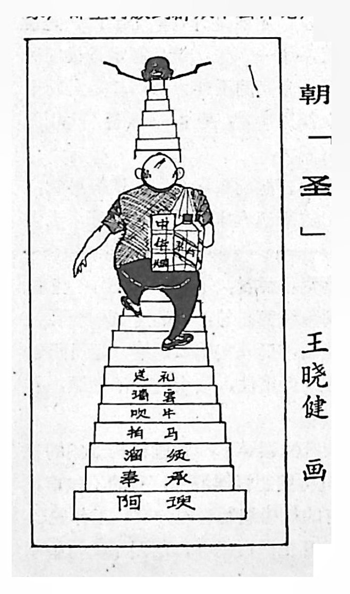

王晓健 《人事》1986年第8期（总第11期），第14页
朝"圣"
Pilgrimage to the Sage
- Text in the drawing
- 阿谀 / 奉承 / 溜须 / 拍马 / 吹牛 / 请客 / 送礼 / 中华烟
Fawning / flattery / toadying / bootlicking / bragging / banquets / gifts / Zhonghua cigarettes - Description
- A man carrying Zhonghua cigarettes and a bottle of liquor climbs a stair whose steps read, from the bottom up, fawning, flattery, toadying, bootlicking, bragging, banquets, gifts — towards a tiny official at the top.
- Artist
- Wang Xiaojian 王晓健
- Published in
- 《人事》1986年第8期（总第11期）, p. 14
- Themes
- Connections (guanxi) · Gifts and banquets · Promotion

Cite
Wang Xiaojian, “朝"圣"” [Pilgrimage to the Sage], Renshi (Personnel) 《人事》, 1986, no. 8, p. 14.